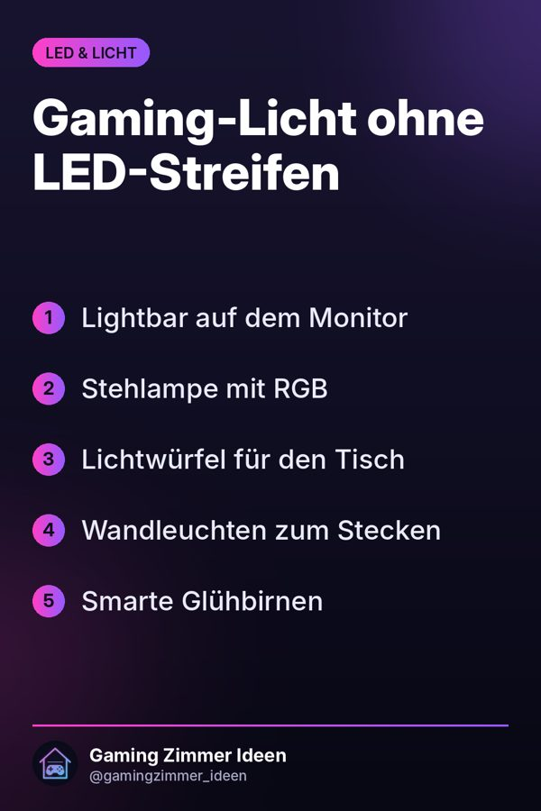

Ideen › LED Beleuchtung Gaming Zimmer
Gaming-Licht ohne LED-Streifen: 5 Ideen für Mietwohnungen

Keine Lust auf Kleben? Für Mietwohnungen gibt es Alternativen zu LED-Streifen: eine Lightbar auf dem Monitor, eine Stehlampe mit RGB, Lichtwürfel für den Tisch, Wandleuchten zum Stecken oder smarte Glühbirnen. Alles ohne Rückstände an der Wand.
Auf einen Blick
- Lightbar auf dem Monitor
- Stehlampe mit RGB
- Lichtwürfel für den Tisch
- Wandleuchten zum Stecken
- Smarte Glühbirnen
Tipp: Eine RGB-Stehlampe in der Ecke ersetzt oft drei Meter LED-Streifen und lässt sich beim Umzug einfach mitnehmen.